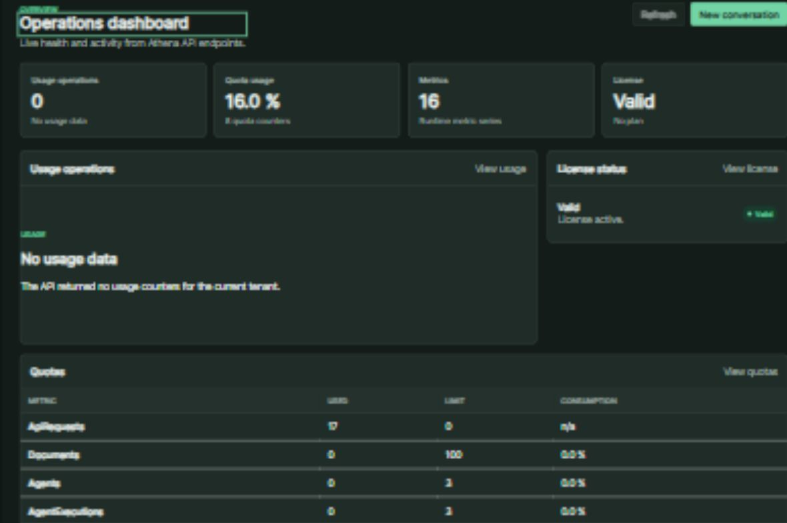
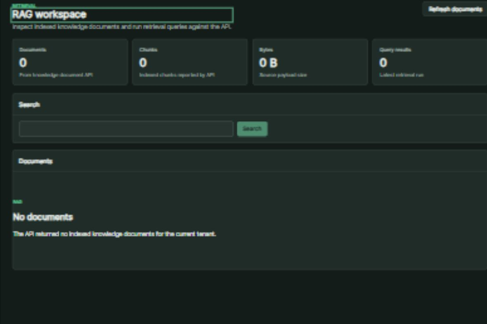
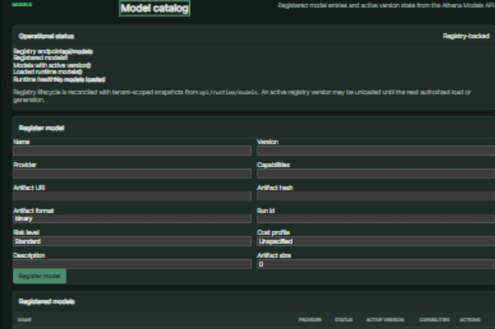
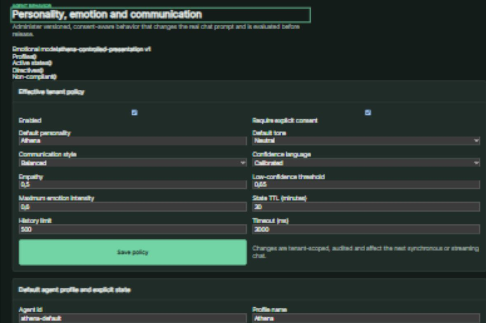

Identidade provisória: “Athena” é a denominação usada atualmente na solução. O nome público/comercial poderá ser alterado antes da publicação definitiva do produto.
Visão da solução
Arquitetura / fluxo
Agentes, memória, RAG, catálogo de modelos, políticas de comportamento e observabilidade.
Evidência atual
Build integral; 5 screenshots reais.
O estado de homologação é mantido explícito; capacidades pendentes não são apresentadas como concluídas.
EVIDÊNCIAS
O que pode ser demonstrado.




EVOLUÇÃO
Área preparada para crescer.
Novas páginas, screenshots, benchmarks, diagramas e documentação pública podem ser adicionados somente dentro desta pasta, sem reconstruir a Home ou alterar os demais projetos.